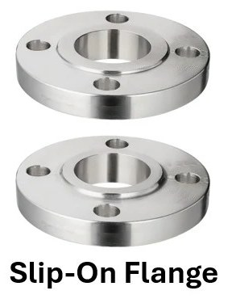
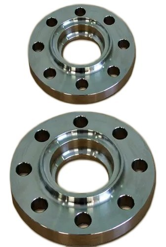
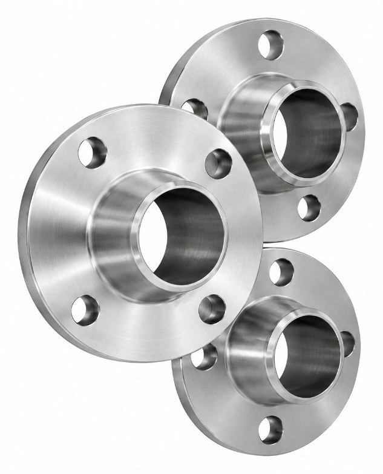
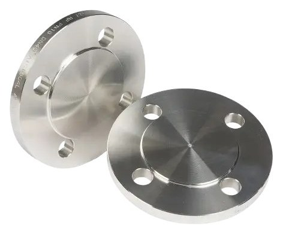
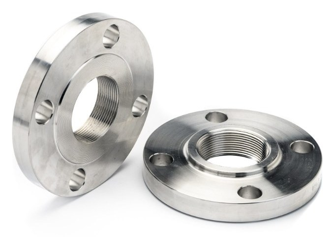
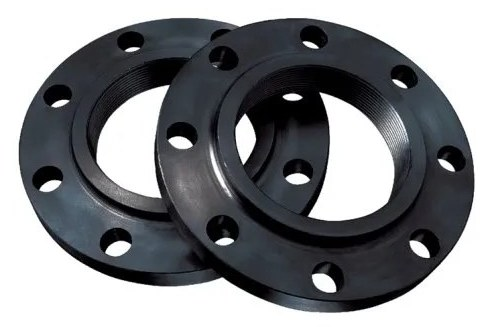
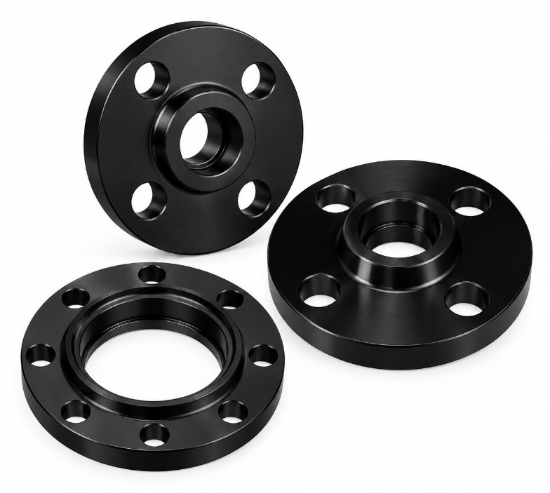
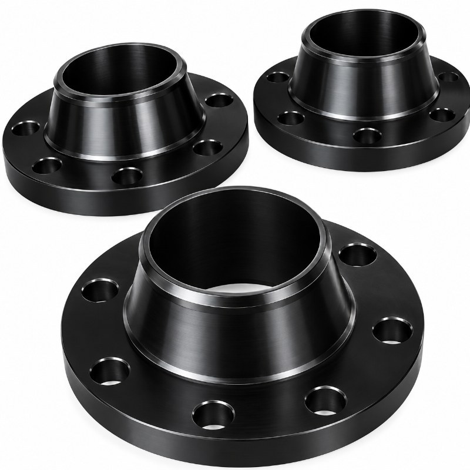
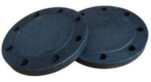
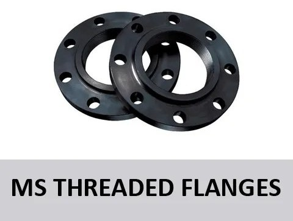

SS Flanges SORF
Sizes½" – 24"
- A182 316L
- PN16
- CL150–CL600
- 5K/10K/16K
Pipe, Fittings & Flanges · 11 products
S.S A182 316L and M.S A105 flanges — forged or cast, SORF, WNRF, blind and screwed. Ask Fakhri Tools for a quote on WhatsApp, by phone or at our trade counter in Al Quoz Industrial Area 3.

Sizes½" – 24"

Sizes½" – 24"

Sizes½" – 24"

Sizes½" – 24"

Sizes½" – 24"

Sizes½" – 24"

Sizes½" – 24"

Sizes½" – 24"

Sizes½" – 24"

Sizes½" – 24"
Sizes½" – 24"
SS flanges are A182 316L and MS flanges are A105, each in SORF, SWRF, WNRF, blind and threaded from ½" to 24". SS flanges come in PN16, CL150 to CL600, and 5K, 10K and 16K. MS flanges come in PN10 to PN25, CL150 to CL600, and 5K, 10K and 16K. C.S and S.S lap-joint flanges come in CL150 to CL600, PN10 to PN40 and 5K to 20K.
Slip-on (SORF) flanges are easy to fit and common on low and medium pressure lines. Weld neck (WNRF) flanges are for higher pressure, temperature or cyclic load. Socket weld (SWRF) suits small bore, threaded flanges avoid welding, and blind flanges close a line. A lap-joint flange turns freely to line up bolt holes.
CL150 and PN16 drilling do not always match, so check the standard on the mating flange. For a quote, WhatsApp the size, flange type, class, PN or K, material, and the quantity, plus the pipe schedule for weld neck.
CL150 is the ASME class and PN16 the EN pressure number. Their bolt patterns differ at many sizes, so match the flange to what it bolts to.
SORF slips over the pipe and suits general service. WNRF is butt-welded to the pipe and is the choice for higher pressure or temperature.
Yes. CNAF, rubber, spiral wound and RTJ gaskets are listed on our gaskets page.
Yes. We are at Warehouse 8, 8th Street, Al Quoz Industrial Area 3, open Monday to Saturday, 7:30am to 6:00pm. Send your list on WhatsApp first and we confirm it before you come.
Send a photo of it, or its nameplate, on WhatsApp and we will tell you if we have it.